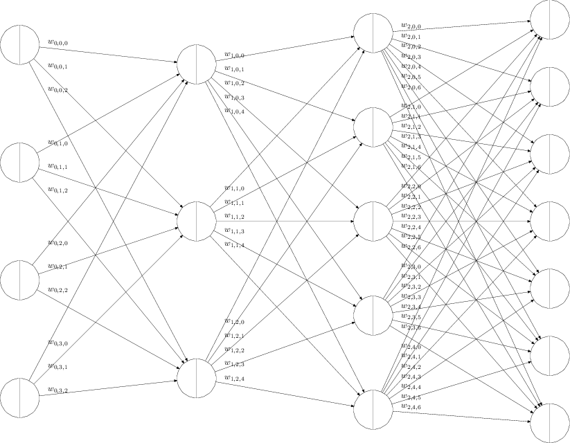

<html>
  <head>
    <script type="text/x-mathjax-config">
  MathJax.Hub.Config({tex2jax: {inlineMath: [['$','$'], ['\\(','\\)']]}});
</script>
<script type="text/javascript" async
  src="https://cdn.mathjax.org/mathjax/latest/MathJax.js?config=TeX-AMS_CHTML">
</script>

  <meta charset="utf-8">
  <meta name="viewport" content="width=device-width, initial-scale=1.0, user-scalable=yes">
  <title></title>

  <link rel="stylesheet" href="../writ.min.css">
</head>
<body>
<main>
<article>
<h1 id="链式求导法则">链式求导法则</h1>
<p>单变量的复合函数</p>
<span class="math">
<script type="math/tex; mode=display">\begin{align}
z &= f(u_1, u_2, ..., u_n) \\
u_i &= u_i(x) \\
\frac{dz}{dx} &= \sum_{i=1}^{n}\frac{dz}{du_i}\frac{du_i}{dx}
\end{align}
</script>
<p></span></p>
<p><span class="math display">\[
\begin{align}
z &amp;= z(y) \\
y &amp;= y(x) \\
\frac{dz}{dx} &amp;= \frac{dz}{dy} \frac{dy}{dx}
\end{align}
\]</span></p>
<p>多变量的复合函数</p>
<p><span class="math display">\[
\begin{align}
z &amp;= f(u_1, u_2, ..., u_n) \\
u_i &amp;= u_i(x) \\
\frac{dz}{dx} &amp;= \sum_{i=1}^{n}\frac{dz}{du_i}\frac{du_i}{dx}
\end{align}
\]</span></p>
<h1 id="神经网络建模">神经网络建模</h1>
<div class="figure">


</div>
<p><span class="math display">\[
\begin{align}
z_{l,j} &amp;= b_{l,j} + \sum_{i=0}^{N_{l-1} -1 } w_{l-1,j,i} a_{l-1,i} \\
a_{l,j} &amp;= \sigma(z_{l,j})
\end{align}
\]</span></p>
<p>其中 - <span class="math inline">\(L\)</span> 为神经网络的层数，包含输入层，包含输出层。上面的例子中是 4 层神经网络 - <span class="math inline">\(l = 0,...,L-1\)</span> 是层的下标 - <span class="math inline">\(N_{l}\)</span> 是第 <span class="math inline">\(l\)</span> 层神经网络的神经元的个数 - <span class="math inline">\(j = 1, ..., N_{l}\)</span> 每一次的第 <span class="math inline">\(j\)</span> 个神经元的下标 - <span class="math inline">\(z_{l,j}\)</span> 是第 <span class="math inline">\(l\)</span> 层神经网络中，第 <span class="math inline">\(j\)</span> 个神经元的 sigmoid 函数的输入。 - <span class="math inline">\(a_{l,j}\)</span> 是第 <span class="math inline">\(l\)</span> 层神经网络中，第 <span class="math inline">\(j\)</span> 个神经元的 sigmoid 函数的输出。特别的，当 <span class="math inline">\(l=1\)</span> 时， <span class="math inline">\(a_{0,i}\)</span> 表示输入层，<span class="math inline">\(N_0\)</span> 表示输入层的个数。 - sigmoid 函数可以是，例如 <span class="math display">\[\sigma(x) = \frac{1}{1+e^{-x}}\]</span> - <span class="math inline">\(w_{l-1,j,i}\)</span> 是第 <span class="math inline">\(l-1\)</span> 层中第 <span class="math inline">\(i\)</span> 个输出和 <span class="math inline">\(l\)</span> 层的第 <span class="math inline">\(j\)</span> 个输入之间的权值。 - <span class="math inline">\(b_{l,i}\)</span> 是第 <span class="math inline">\(l\)</span> 层中第 <span class="math inline">\(j\)</span> 个神经元的偏移量</p>
<h1 id="back-propagation">back propagation</h1>
<h2 id="目的">目的</h2>
<p>给定一个训练样本 <span class="math inline">\(a_{0,j}\)</span>, 和期待的输出 <span class="math inline">\(y_{k}\)</span>, <span class="math inline">\(k=1...N_{L-1}\)</span> 。</p>
<p><span class="math inline">\(a_{0,j}\)</span> 这个数学符号，<span class="math inline">\(0\)</span> 表示第零层，即输入层。<span class="math inline">\(j =1...N_{0}\)</span> 表示第 <span class="math inline">\(0\)</span> 层有 <span class="math inline">\(N_{0}\)</span> 个神经元</p>
<p>定义成本函数如下</p>
<p><span class="math display">\[C = \frac{1}{2} \sum_{k=0}^{N_L - 1} (y_{k}-a_{L-1,k})^2\]</span></p>
<p>那么，问题就是，如何选取一组 <span class="math inline">\(w_{l,j,i}\)</span> 和 <span class="math inline">\(b_{l,i}\)</span> ，使得 <span class="math inline">\(C\)</span> 最小。</p>
<h2 id="解决方案">解决方案</h2>
<p>梯度降低的方法，随机选取一组答案，然后沿着梯度方向，即 <span class="math inline">\(\frac{\partial{C}}{\partial{w_{l-1,j,i}}}\)</span> 和 <span class="math inline">\(\frac{\partial{C}}{\partial{b_{l,j}}}\)</span> ，减小。逐步找到合适的答案，<span class="math inline">\(w_{l-1,j,i}\)</span> 和 <span class="math inline">\(b_{l,i}\)</span> 。</p>
<p>那这里的问题就是，如何求 <span class="math inline">\(\frac{\partial{C}}{\partial{w_{l-1,j,i}}}\)</span> 和 <span class="math inline">\(\frac{\partial{C}}{\partial{b_{l,j}}}\)</span> ？</p>
<h2 id="推导">推导</h2>
<p>如果定义</p>
<p><span class="math display">\[\delta_{l,j}= \frac{\partial{C}}{\partial{z_{l,j}}}\]</span></p>
<p><span class="math inline">\(\delta_{l,j}\)</span> 的含义就是，如果神经元输入 <span class="math inline">\(z_{l,j}\)</span> 变化一点点，会导致成本函数 <span class="math inline">\(C\)</span> 变化多少？</p>
<p>因为</p>
<p><span class="math display">\[ z_{l,j} = b_{l,j} + \sum_{i=0}^{N_{l-1} -1 } w_{l-1,j,i} a_{l-1,i} \]</span></p>
<p><span class="math inline">\(w_{l-1,j,i}\)</span> 变化一点点，会导致 <span class="math inline">\(z_{l,j}\)</span> 变化 <span class="math inline">\(a_{l-1,j}\)</span> 倍。</p>
<p><span class="math inline">\(b_{l,j}\)</span> 变化一点点，会导致 <span class="math inline">\(z_{l,j}\)</span> 变化 同样的比例。</p>
<p>根据链式求导法则，就得出了下面的公式。</p>
<p><span class="math display">\[
\begin{align}
\frac{\partial{C}}{\partial{w_{l-1,j,i}}} &amp;= \delta_{l,j} a_{l-1,i} \\
\frac{\partial{C}}{\partial{b_{l,j}}} &amp;= \delta_{l,j}
\end{align}
\]</span></p>
<p>那么现在的关键是如何求 <span class="math inline">\(\delta_{l,j}\)</span></p>
<p>因为 <span class="math display">\[C = \frac{1}{2} \sum_{k=0}^{N_{L-1}-1} (y_{k}-a_{L-1,k})^2\]</span></p>
<p>考虑第 L - 1 层，即最后一层。</p>
<p><span class="math display">\[\delta_{L-1,j}= \frac{\partial{C}}{\partial{z_{L-1,j}}}\]</span></p>
<p>根据链式求导法则</p>
<p><span class="math display">\[\delta_{L-1,j}= \frac{\partial{C}}{\partial{a_{L-1,j}}}\frac{\partial{a_{L-1,j}}}{\partial{z_{L,j}}}\]</span></p>
<p><span class="math display">\[\delta_{L-1,j}= (a_{L-1,j} - y_j) \frac{\partial{a_{L-1,j}}}{\partial{z_{L-1,j}}}\]</span></p>
<p>这样，我们得到了最后一层的 <span class="math inline">\(\delta_{L-1,j}\)</span>。</p>
<p>我们递归的向后回溯，假设已知所有 <span class="math inline">\(\delta_{l,j}\)</span> ，如果求 <span class="math inline">\(\delta_{l-1,j}\)</span> 。</p>
<p><span class="math display">\[\delta_{l-1,j}= \frac{\partial{C}}{\partial{z_{l-1,j}}}\]</span></p>
<p>根据链式求导法则 <span class="math display">\[
\begin{align}
\delta_{l-1,j} &amp;= \sum_{i=0}^{N_{l} -1}
                  \frac{\partial{C}}{\partial{z_{l,i}}}
                  \frac{\partial{z_{l,i}}}{\partial{a_{l-1,j}}}
                  \frac{\partial{a_{l-1,j}}}{\partial{z_{l-1,j}}} \\
              &amp;= \sum_{i=0}^{N_{l} -1}
                  \delta_{l,i}
                  \frac{\partial{z_{l,i}}}{\partial{a_{l-1,j}}}
                  \frac{\partial{a_{l-1,j}}}{\partial{z_{l-1,j}}} \\
              &amp;= \sum_{i=0}^{N_{l} -1}
                  \delta_{l,i}
                  w_{l-1,j,i}
                  \frac{\partial{a_{l-1,i}}}{\partial{z_{l-1,j}}}
\end{align}
\]</span></p>
<p>上述公式的理解就是，第 $l -1 $ 层的输入 <span class="math inline">\(z_{l-1,j}\)</span> 的变化，会导致成本 <span class="math inline">\(C\)</span> 变化多少呢？ 根据链式求导法则，这个 <span class="math inline">\(C\)</span> 的变化量，会分散传导至第 <span class="math inline">\(l\)</span> 层。第 <span class="math inline">\(l\)</span> 层每个神经元分摊到的成本变化量是和 <span class="math inline">\(w_{l-1,j,i}\)</span> 成正比，也和 sigmod 函数的变化率成正比。</p>
</article>
</main>
</body>
</html>
